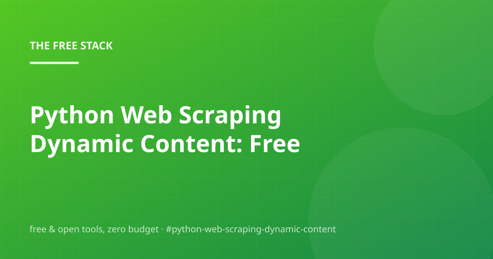

Python Web Scraping Dynamic Content: Free Tools, Real Trade-offs

You don't need a budget to get good at python web scraping dynamic content. You need a map of the free tools, and an honest read on the trade-offs between them. Here's that map — researched, written and fact-checked by the same engine that publishes this blog.
We'll walk through Polite Scraping, Pytrends, Autocomplete Suggest Endpoints, and Choose boring technology first — and finish with the questions people actually ask, so you can check before you buy anything. You shouldn't have to buy anything.
Polite Scraping
First, the thing that actually matters: The difference between 'scraping' and 'being blocked' is politeness: identify yourself, rate-limit, and cache.
Which, in day-to-day terms, means: A descriptive User-Agent, a few seconds between requests, honoring robots.txt, and caching responses are the whole etiquette. Most sites allow reasonable personal-use access; the keyless endpoints this engine uses are the same ones the search boxes use, and they reward clients who behave.
For a personal project or side business, this covers you without breaking a sweat.
- Set a descriptive User-Agent with contact info
- Space requests (this engine sleeps between outbound calls)
- Cache results per query — never re-fetch what you already have
Pytrends
Here's the part most people get wrong. pytrends is an open-source Python client for Google Trends — free programmatic access to interest-over-time data.
In practice that means: It wraps the unofficial Trends API, so it can break when Google changes things, but it is the standard way to check whether a topic's interest is rising before you commit the blog to a topic family. Use it as a trend check, not a firehose.
No signup wall, no credit card — just a README and some patience.
Autocomplete Suggest Endpoints
Start with the basics. The autocomplete endpoints behind Google, DuckDuckGo and Bing search boxes are public and keyless — which is what this blog uses for its own keyword research.
In other words: A single GET request returns the same suggestions a human would see while typing. They are unofficial and can be throttled under load, so a polite tool batches requests, caches responses, and has a fallback for when the endpoints are unreachable.
If you only do one thing today, make it this one.
- GET suggestqueries.google.com/complete/search?client=firefox&q=your+topic
- Parse the JSON array of suggestion strings
- Cache per query and space requests out — treat it as a courtesy service
Choose boring technology first
Skip the fluff and start here: The best infrastructure for a side project is the least surprising kind: static files, a public repo, a free CDN in front of it.
Which, in day-to-day terms, means: Every exotic dependency is a future tax. If a free, open-source tool can serve the job, pick the one with the longest track record and the biggest community, and save the interesting experiments for the parts users actually touch.
If you only do one thing today, make it this one.
Frequently asked questions
What would you do first if you only had one free afternoon?
The autocomplete endpoints behind Google, DuckDuckGo and Bing search boxes are public and keyless — which is what this blog uses for its own keyword research. Treat that as the working assumption and re-check the docs once a quarter.
What are the real limitations of python web scraping dynamic content?
The autocomplete endpoints behind Google, DuckDuckGo and Bing search boxes are public and keyless — which is what this blog uses for its own keyword research. Treat that as the working assumption and re-check the docs once a quarter.
How much do I need to know before trying python web scraping dynamic content?
The honest answer: The difference between 'scraping' and 'being blocked' is politeness: identify yourself, rate-limit, and cache. Keyless public endpoints can get throttled if you hammer them, so batch your requests and cache what you fetch.